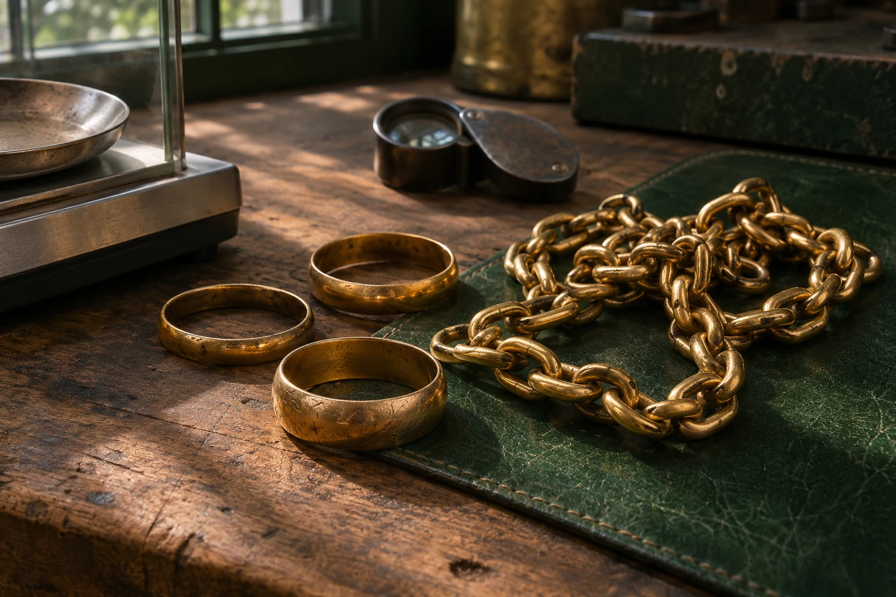
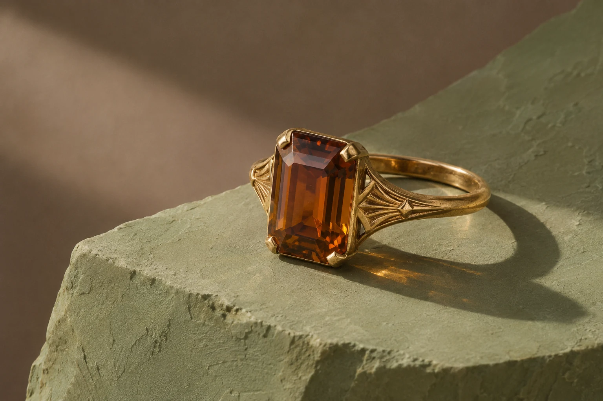
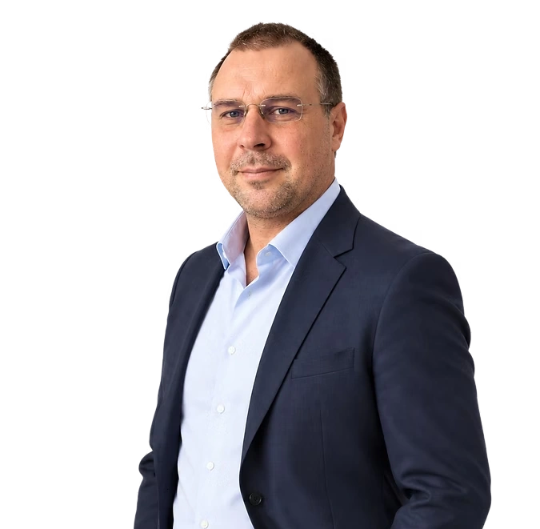

Goldankauf in Karlsbad
Was ist Ihr Gold wert?
Ich kaufe Goldschmuck, Münzen und Edelmetalle aus Nachlässen an. Beim Wiegen und Prüfen zeige ich Ihnen, wie mein Angebot für Ihre Stücke zustande kommt.

Wege zum Ankauf
Wie möchten Sie Ihre Stücke bewerten lassen?
Persönlicher Termin
Beim Wiegen und Prüfen können Sie dabei sein und direkt nachfragen. Hausbesuche sind rund um Karlsruhe nach Absprache möglich.
So läuft ein Termin abAnkauf per Post
Sie schicken Ihre Stücke mit dem Begleitschein ein. Nach der Prüfung erhalten Sie ein Angebot und entscheiden über den Verkauf.
Versand vorbereitenGesicherter Werttransport
Für Werte ab etwa 5.000 Euro lässt sich die Abholung über einen Transportpartner organisieren. Die Einzelheiten klären wir vorab.
Werttransport besprechen
Schmuck, Münzen und Besteck
Auch ein einzelner Ohrring lässt sich prüfen.
Eine gerissene Kette, Zahngold oder abgenutztes Tafelsilber können noch Edelmetall enthalten. Zum Ankauf gehören außerdem Goldbarren, Münzen und Stücke aus Platin oder Palladium.
Bei Schmuck mit einem besonderen Stein lohnt sich ein zweiter Blick. Ob eine eigene Untersuchung sinnvoll ist, besprechen wir gemeinsam.
Zur EdelsteinprüfungIhr Ansprechpartner
Dietmar Vogelmann
Gerade bei einem Nachlass liegen oft Dinge nebeneinander, die für Ihre Familie ganz Unterschiedliches bedeuten. Wir können erst einmal sortieren. Sie entscheiden für jedes Stück, ob Sie es behalten oder verkaufen möchten.
